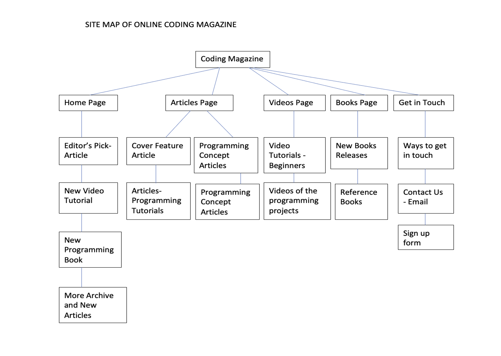
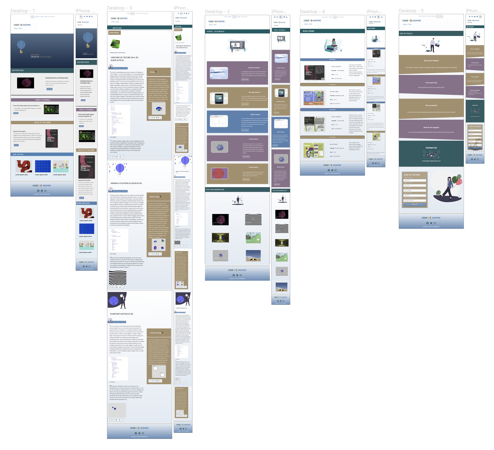

Introduction:
Story behind website:
- The idea of this website originated while working with a group of teachers who teach programming in their schools and want to create an online free coding magazine, where they themselves and their students can contribute and share their programming skills to teach and inspire others to learn coding.
- Since the website inspires people of all ages, abilities and capabilities to learn coding by following simple tutorials so the name of the website CODE TO INSPIRE is chosen to reflect it.
- A focus group of people from different ages and backgrounds was used to test features of the website. Magazine like format helped people to use website with ease.
- Based on feedback from people using the website the format of tutorials is based on ‘learn by doing’ so learners can follow step by step approach in an easy to comprehend language.
Structure of the website:
- Top-down structure has been used, due to the needs of the users of the website, which logically divides the content by breaking it up into categories.
- It focuses first on general categories (Articles, Videos and Books). These general categories break up into individual pages.
Inspiration:
The inspiration for the website came from the following sources:
- Code Guppy website,gave the inspiration of creating articles with tutorials which explain the process in a stepwise fashion.
- HelloWorld Magazine for educators,gave the idea of the structure of a coding magazine,how accessibility is addressed like colour selection.
-
YouTube channel of Simon Tiger
who is young coding genius.
- He inspired me to include the work done by young learners, as children learn more quickly from each others.
- Not all learners can understand in a very technical language and therefore lose interest.
- Inclusion of videos tutorials, for learning at one’s own pace.
Accessibility:
The site has following accessibility features:
- Use of Semantic tags – for easy screen reader navigation like nav, header, main, article, figure, figcaption, aside, section, time, label, form, input and footer throughout the website.
- Use of audio tag in the Articles page to provide the accessibility to people with visual impairment to the text inside the article tag. Making it accessible to both people with auditory and visual impairment.
- Sufficient colour contrast is used while selecting colour scheme of the website with high contrast text to avoid Colour blindness issues.
Usability:
The website has the following usability features:
- The website is optimized for mobile devices of dimension 414 x 736 to smallest device of dimension 240 x 320.
-
Web content accessibility guidelines are met like:
- Sufficient colour contrast with high contrast text is to provide accessibility for the people with colour blindness.
- Audio element in HTML is synchronised with text is used to provide the accessibility to both user with visual as well as auditory impairment.
- HTML semantic tags are used throughout the website for easy screen reader navigation.
- The usability of the website is enhanced with clear and simple navigation.
Learning:
-
I have learned how to use Flexbox in building a responsive website.
- For learning to use flexbox, I have followed W3 school as well as CSS-tricks websites,
- I have learned by trial and error, how to give a flex-direction: row, but can make its elements appear as columns but it worked well at the end.
-
I have learned how Javascript can be used to manipulate
the HTML elements.
- For learning to use the Javascript, I have followed the lectures and W3 School.
- Tried making simple manipulations like changing the size of the image.
- Then I wanted my signup form to validate the information so I found W3 School Form Validation example , I learned that ‘.value ’ is required for retrieving the information. So, I tried taking the information from the fields and when onclick function is called then showing as an alert to confirms the information .
-
I wanted to use p5.js library as advance Javascript library.
Try use my p5.js sketch to appear on the HTML page
without embedding.
I have learned from Daniel Shiffman YouTube video that it is possible to assign the HTML tag like p an id and use it as the parent of the canvas element in p5.js to make the sketch appear on the HTML page, without using canvas tag.
- So, I tried with ‘div’ instead in the Articles Page and gave it the id, which in the script.js is specified as the parent of the canvas.
- At first, I used a simple 2D sketch to appear which successful.
- Then I tried the 3D WEBGL sketch of mine to appear on it, which also worked.
- I made the 2D sketch appear over the 3D object, using createGraphics() in p5.js library.
- Finally, I tried adding mouse interaction inside the Javascript which worked.
Evaluation 1:
- I have tried many new HTML tags like audio tag, time tag, form tag, input tag etc. which I think work very well as tools for enhancing the accessibility.
- The responsiveness of the website for devices as big as laptops with dimensions of 1440 x 900 to smallest mobile device of dimensions of 240 x 320.
- Use of Javascript to manipulate either for resizing of HTML element or used to collecting the information provide in the form and confirming before submission or by using HTML element and specifying it as parent of the p5.js library canvas function to make the canvas inside the div and run the 3D sketches.
- Colour selection which is accessibility friendly. And consistent format throughout the website.
- Use of appropriate animation effects using @keyframes, ::before and :hover
Evaluation 2:
- I would like to improve on my simple layout to more sophisticated, but accessibility friendly layout.
- Use of more Javascript to make website more dynamic. By experimenting with flip book animation using Javascript or slideshow or how can you download an article etc.
- Generating SVG’s using Javascript library like paper.js,for faster upload.
Resources:
- For the banner text animation on Home Page, this video on YouTube inspired me , where the creator used ::before in CSS and the content changes using @keyframe. And so after learning more about ::before and ::after and its content property in this video by Kevin Powell and W3 School ,the banner for the website was created.
- While learning about css_pseudo_elements from W3 School ,also learned about other properties as well like ::first-letter and ::selection applied them in the website.
- For the video resources on Videos Page , YouTube videos from my son’s channel Learn With Me and my own YouTube channel Byte Size Coding is being used . In the For Inspiration section, the videos are my own, which are hosted on AWS Simple Storage Service (AWS S3).
- In the More Articles section on Home Page , all the articles are my own on Medium and on Byte Size Coding .
- In the Articles Page, the content and images are all my own projects and for synchronized Audio, AWS service called Polly was used to convert text to speech.
- For choosing colour contrast theme for the website, the website used wasCoolors .
- For most of the Javascript concepts the lectures and W3 School are being used and applied to resize the image and in the signup form applied the concept to make function in Javscript to be used for confirming information given in the form before submission.
- For Advance Javascript library, p5.js library is being used, and learned from YouTube video by Daniel Shiffman how to make the HTML element the specified as the parent of the canvas in Javascript. By using the concept and applying it, made my own a 3D interactive sketch that appear in the div on the Articles Page.
- For Social media icons, Font Awesome is used in the Footer.
- For all the SVG’s, the website been used is unDraw. Rest of the images are of my own projects.
- For the favicon , the website been used favicon.io to generate text favicon.
- To design the Get in touch page ,clip-path is used in CSS to mask the portion of the div giving it a particular shape. Learned about this concept from this article by Ahmed Shadeed. So,after trying out different shapes,polygons worked well ,which was used in the website.
- For making the wireframes and the mockups,Figma has been used.
- For complete website the code is written by me for HTML, CSS and Javascript.
Appendices:
1- Site Map of the Magazine
2- Wireframes
Wireframe Home page:
Wireframe Articles page:
Wireframe Videos page:
Wireframe Books page:
Wireframe Get In Touch page:
Mockups
Mockup Home page:
Mockup Articles page:
Mockup Videos page:

Mockup Books page:
Mockup Get In Touch page: